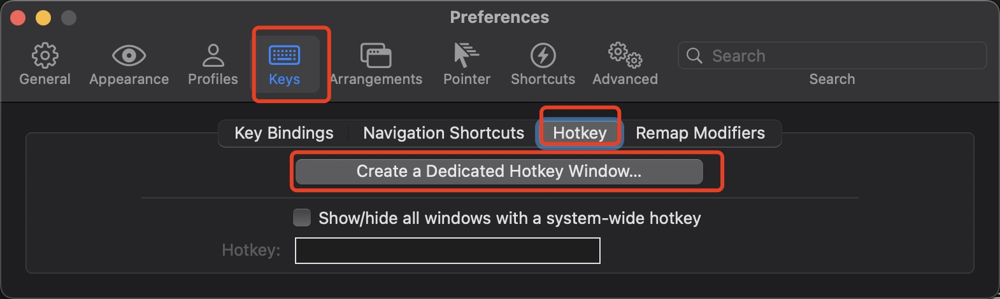
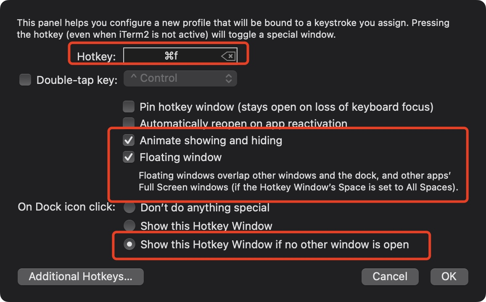
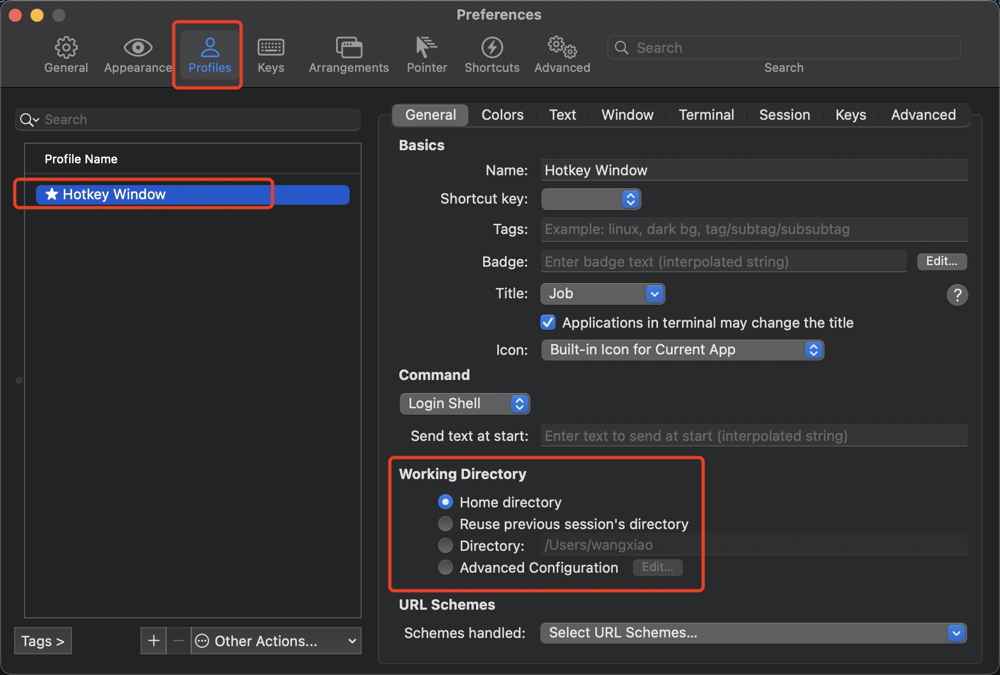
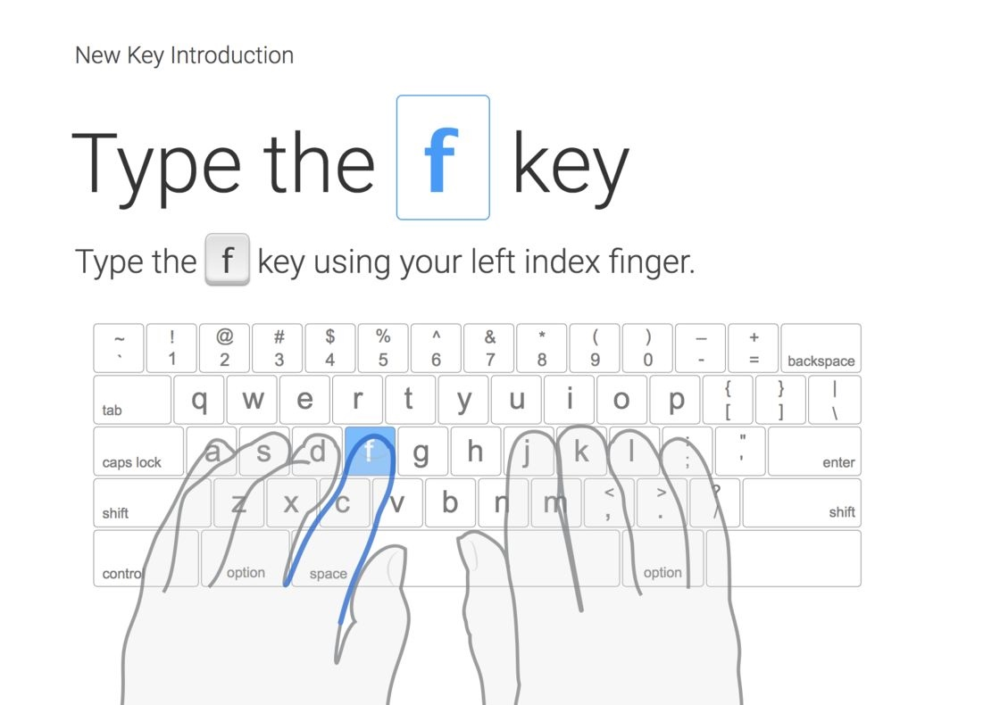
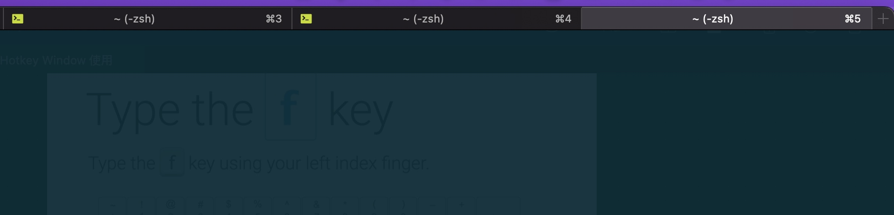
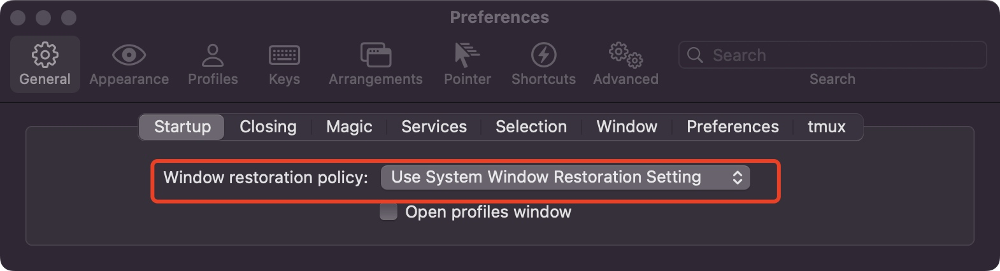
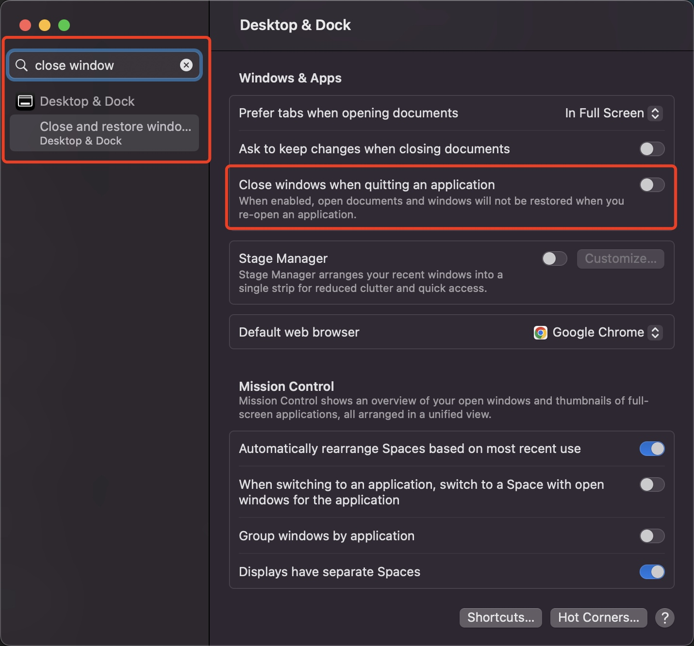
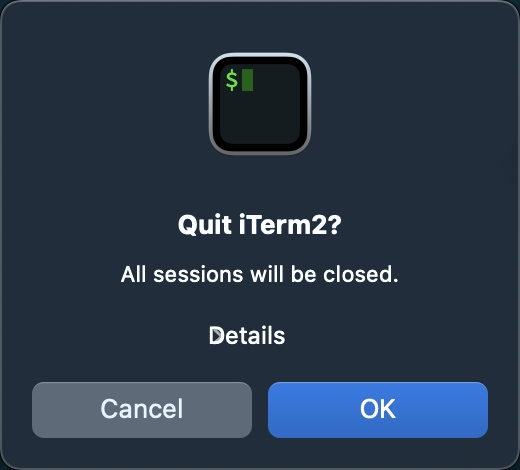
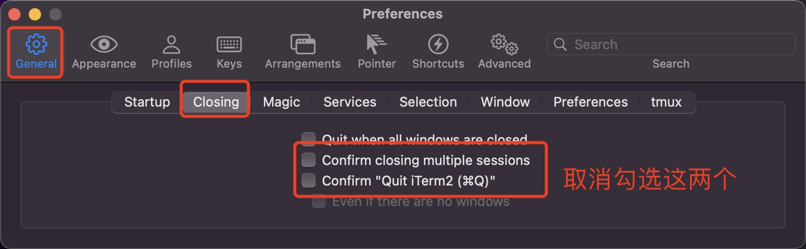

iTerm Hotkey Window 使用
iTerm 是 Mac Terminal 的替代品，提供了比 Mac 自带 Terminal 不知道好到哪里去的体验。墙裂推荐大家用起来。今天介绍的小技巧也是基于 iTerm 提供的能力。
在 Mac 上经常需要使用到命令行，比如操作 git 仓库等等。正常来讲，每次打开命令行都要点一下 Dock 里的应用图标才行。这对于频繁使用命令行工具的场景实在效率太低。我们可以使用 iTerm 提供的 Hotkey Window 实现快捷键一键开启和关闭命令行页面。
效果展示
可以看到视频里，鼠标没动，就可以控制命令行页面的显示和隐藏，并且自带动画。当然，如果当前是全屏页面，其实也没什么区别，只是录屏里没体现而已。
增加 Hotkey Window
iTerm 设置 --> Hotkey --> Create a Dedicated Hotkey Window...

然后设置 Hotkey Window 的一些属性。

- 第一个红框里用于设置快捷键，这样后续操作这个快捷键就可以显示和隐藏 iTerm 了。
- 第二个红框的两个选项都选中一下，其中 Floating Window 这个选项可以让 iTerm 覆盖到全屏页面上。
- 第三个红框是指当你点击 Dock 的时候的表现，这里建议选第三个。这样可以实现用快捷键打开 Hotkey Window，点击 Dock 打开非 Hotkey 的 Window。
配置 Hotkey Window
在增加了一个 Hotkey Window 之后，可以去 Preferences --> Profiles 进行定制化的设置。
比如当打开一个 tab 时，默认是打开用户根目录的，也就是 ~ 。可以在这里设置自定义的目录。

一些过于细致的解释。。
Hotkey Window 的快捷键建议设置为随手就能操作的，并且不和主流 Hotkey 冲突的。
比如我是设置为 Command + D，虽然 D 这个字母和命令行没啥关系，但是方便呀，又不和其他 Hotkey 冲突。因为左手一般都会放置到打字指法的默认位。

如上图，四个手指默认会放置到 A S D F 这四个字母上。其中：
Command + A 是全选，不能覆盖
Command + S 是保存，不能覆盖
Command + F 是搜索，不能覆盖
那就只剩 Command + D 了，鉴于终端操作对我来说非常频繁，所以就把这个位置用于 Hotkey 了。
Session 恢复
一般来讲我们会开多个 Session，也就是多个 tab，类似于下面这样。

每次重启电脑后，这些 tab 要重新打开，然后重新进入对应的目录，有点麻烦。我们可以通过下面的方式设置 iTerm2 启动时自动恢复上一次打开的 tab。
1. 首先把 iTerm2 设置里的 restore policy 设为系统默认

2. 在系统设置中关闭下面这个设置
不同系统版本的路径可能不同，可以直接搜索 close window 找到这个选项。

详情参考：How can I save tabs in iTerm 2 so they restore the next time the app is run?
除此之外，每次关机 iTerm 都会提示这个，还得手动点一次。

既然我们都设置了自动恢复 Session，关闭时就没必要提醒了，反正下次还能恢复。
可以通过取消勾选这两个设置达到关闭 iTerm 时不弹窗提示的目的。

转载请注明出处：iTerm Hotkey Window 使用 - 专业点
欢迎关注我的公众号

推荐

公众号推荐
欢迎关注我的公众号一起愉快的交流。